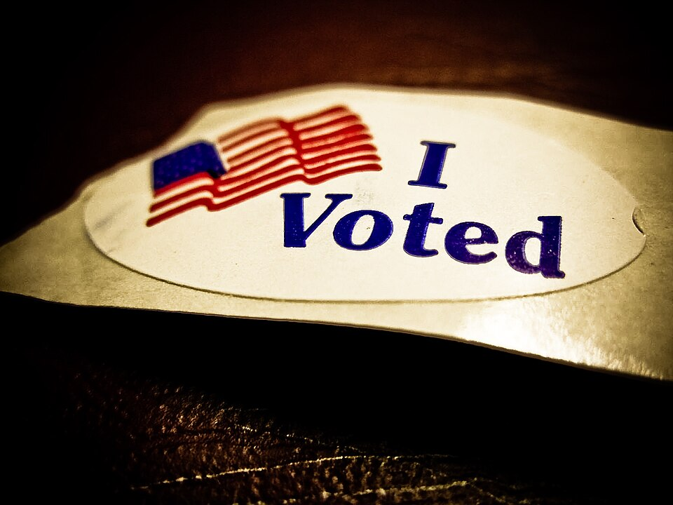
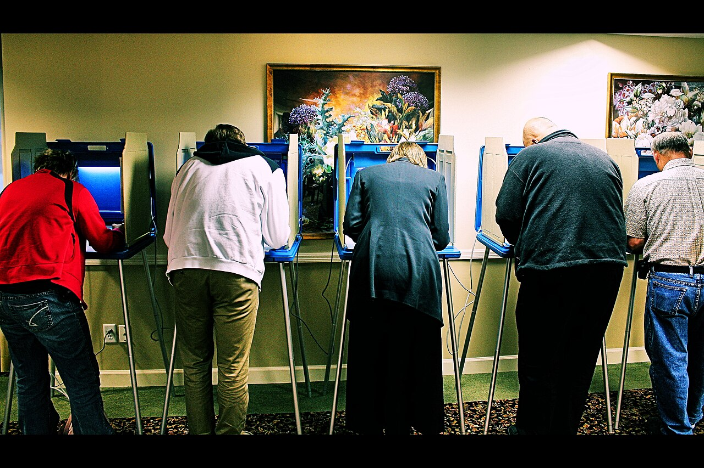
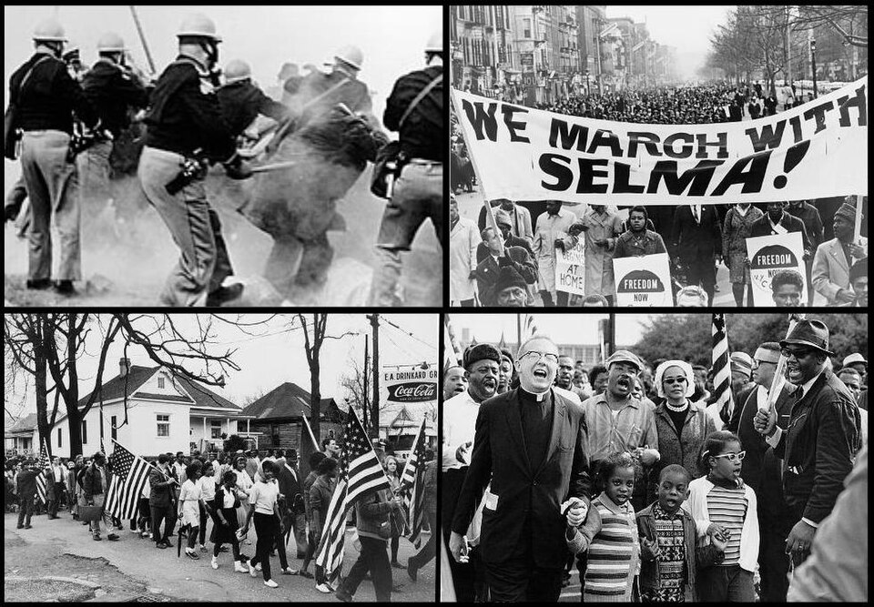
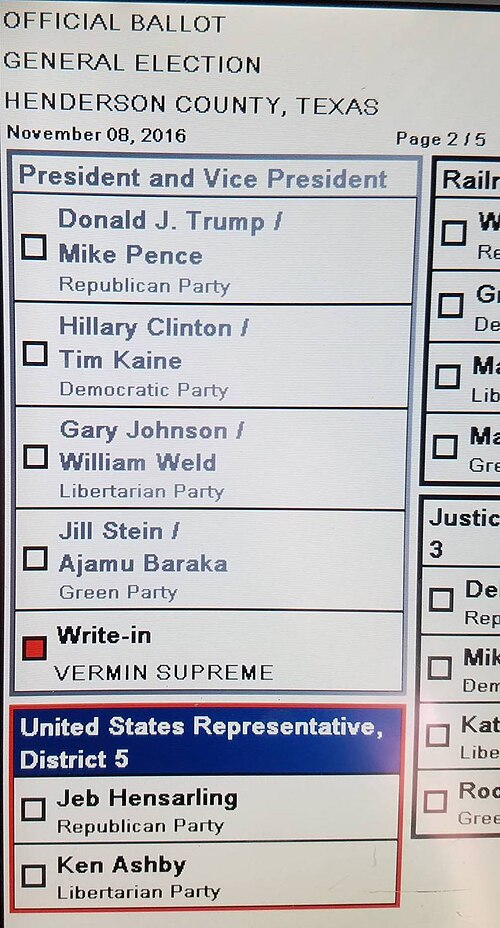
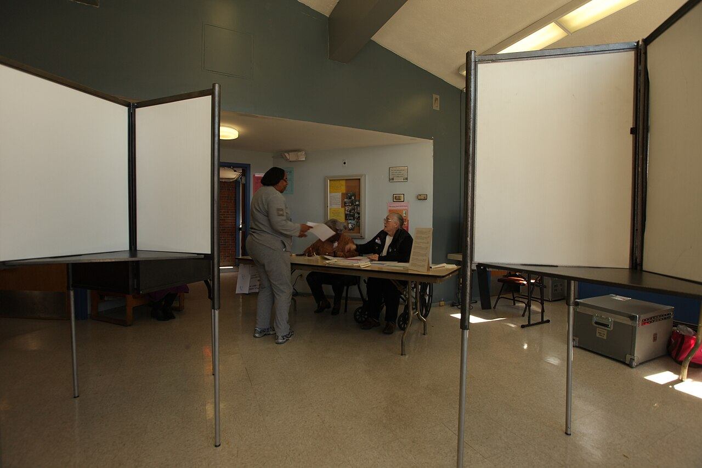
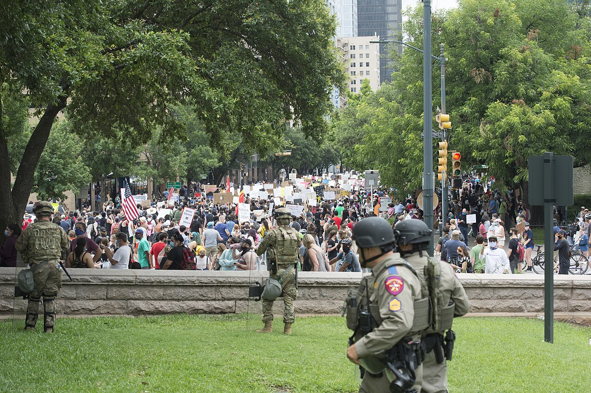

Discover how Texans exercise their democratic rights and participate in shaping their government!
Enter your name to begin your journey through Texas voting and political participation:
Explore how demographic changes are transforming Texas politics through the lens of Fort Bend County.
Learn about voter registration requirements across the United States and in Texas.
Discover the many types of elections in which registered Texans can participate.
Understand the barriers to voting that existed in Texas and how they were overcome.
Learn how voters make their choices at the ballot box.
Examine the factors that affect who votes and why turnout matters.
Explore reforms and strategies designed to get more citizens to the polls.
Discover other ways citizens participate in the political process.
Fort Bend County covers an area along the Brazos River southwest of Houston. For most of the 20th Century, it was a rural area known for ranching and cotton farming, and as the home of Imperial Sugar and several large state prisons. As Texas shifted from a predominantly Democratic to a predominantly Republican state in the 1970s, Fort Bend County's rural, conservative roots brought it enthusiastically along with the trend. In 1976, only 39 percent of Fort Bend voters selected Jimmy Carter for President in a race in which he carried Texas over President Gerald Ford.

+15 points! 📊 Political shift revealed!
In the 2000s, Republican majorities began to shrink. Mitt Romney won Fort Bend County with only 53 percent in 2012, and Hillary Clinton carried Fort Bend County in 2016, even as 52 percent of Texas voters chose Donald Trump. In the 2018 election, every countywide election was won by a Democrat, with challenger Beto O'Rourke outpolling incumbent Republican Senator Ted Cruz by more than 11 points, even as Cruz was reelected statewide.
How did rural/suburban Fort Bend County become what appears to be at least a Democratic-leaning, if not solidly Democratic, county? The answer lies at least partly in demographics.
+15 points! 🗳️ Electoral patterns uncovered!
For better or worse, race is a strong predictor of political party preferences. As non-Anglo races become a larger percentage of the population and – more importantly – a larger percentage of the electorate throughout Texas, many predict that Texas' days as a reliably Republican state are numbered. This is why political scientists pay close attention to both demographics and voter turnout when making electoral predictions.
Before most voters are allowed to cast a ballot, they must register to vote in their state. This process may be as simple as checking a box on a driver's license application or as difficult as filling out a long form with complicated questions. Registration allows governments to determine which citizens are allowed to vote and, in some cases, from which list of candidates they may select a party nominee.
+15 points! ⚖️ Variation in voting rights revealed!
Florida and Kentucky permanently bar felons and ex-felons from voting unless they obtain a pardon from the governor, while Mississippi and Nevada allow former felons to apply to have their voting rights restored. On the other end of the spectrum, Vermont does not limit voting based on incarceration unless the crime was election fraud. Maine citizens serving in Maine prisons also may vote in elections. Wisconsin requires that voters "not wager on an election," and Vermont citizens must recite the "Voter's Oath" before they register.
The National Commission on Voting Rights completed a study in September 2015 that found state registration laws can either raise or reduce voter turnout rates, especially among citizens who are young or whose income falls below the poverty line. States with simple voter registration had more registered citizens.
+15 points! 📅 Registration timing matters!
States may require registration to take place as much as thirty days before voting, or they may allow same-day registration. Maine first implemented same-day registration in 1973. Fourteen states and the District of Columbia now allow voters to register the day of the election if they have proof of residency, such as a driver's license or utility bill. States that use same-day registration had a 4 percent higher voter turnout in the 2012 presidential election than states that did not.
To be eligible to register to vote in Texas, a person must be:
Registration in Texas is generally done by signing a postage-paid voter registration application and dropping it in the mail. In most counties, the Tax Assessor-Collector is also the county voter registrar. Applications are available at county facilities and at many libraries, post offices, and schools. You must be at least 17 years and 10 months of age on the date you apply, and the application must be received by the county or postmarked 30 days before any election in which you wish to vote.
To vote in Texas, it is helpful, but not required, that you have your voter registration card with you. You are required to have one of seven forms of photo identification, like a driver's license or a passport, to vote. Citizens can also obtain an Election Identification Certificate free of charge at more than 225 Texas driver license offices throughout the state.
Once you are registered, there are a number of different elections in which you can participate. Each type of election serves a different purpose in Texas democracy.

+15 points! 📊 Primary systems explained!
Many states have closed primaries, meaning that a voter must declare their membership in a political party as part of the voter registration process. Only "registered Republicans" can vote in Republican primary elections in states like California. Texas is an open primary state – meaning you simply register as a voter. A registered voter can participate in any party primary but can only participate in one party's primary in each election and cannot vote in a party's runoff election after voting in another party's primary in the same election.
+15 points! 🎂 Voting age nuances revealed!
What if you turn 18 in the middle of an election year? You can vote in the November election, but not in the March primary in which the candidates are chosen. That's like coming in in the middle of the movie! State Representative Donna Howard (D-Austin) has proposed a state constitutional amendment to allow 17-year-old Texans who will turn 18 in time for a November general election to also participate in that year's primary.
Registered voters in Texas can also participate in local elections to choose mayors and city council members, school board and special district board members – all of which must be elected with a majority. Constitutional Amendment Elections, generally in November following a session of the Texas Legislature, allow voters to consider changes to the state's constitution recommended by two-thirds of the Texas House and Senate.
+15 points! ⚖️ Special elections explained!
Recall elections allow voters who live in home rule cities to remove an official from office, and are held only when citizens gather a required number of signatures on petitions demanding the removal. In Groves, a city near Beaumont, more than 62 percent of voters chose to remove City Council Member Cross Coburn from office following the release of controversial photos.
Rollback elections can be triggered automatically or by petition and allow voters to choose whether to decrease a jurisdiction's property tax rate. In August 2018, voters in the Amarillo area voted nearly 2-to-1 to roll back the property tax rate for the Pampa Independent School District.
Since its admission to statehood in 1845, Texas has participated in every U.S. presidential election except the election of 1864 during the American Civil War, when the state had seceded to join the Confederacy, and the election of 1868, when the state was undergoing Reconstruction.

In its first century, Texas was a Democratic bastion, only voting for another party once – in 1928 when anti-Catholic sentiment against Al Smith drove voters to Republican Herbert Hoover. A gradual trend towards increasing social liberalism in the Democratic Party, however, has turned the state (apart from Hispanic South Texas, the Trans-Pecos, and several large cities) into a Republican stronghold. Since 1980 Texas has voted Republican in every election.
+15 points! 💰 Financial barriers to voting exposed!
Poll taxes added a direct out-of-pocket transaction cost to voting by charging money to vote. Texas adopted a poll tax in 1902. It required that otherwise eligible voters pay between $1.50 and $1.75 to register to vote – a lot of money at the time, and a big barrier to the working classes and poor. Poll taxes, which disproportionately affected African Americans and Mexican Americans, were finally abolished for national elections by the 24th Amendment to the U.S. Constitution, adopted in 1964. Two years later, the U.S. Supreme Court, in Harper v. Virginia Board of Elections, ruled that poll taxes in state elections were unconstitutional.
+15 points! ⚖️ Landmark civil rights legislation!
The ratification of the Twenty-Fourth Amendment in 1964 ended poll taxes, but the passage of the Voting Rights Act (VRA) in 1965 had a more profound effect. The act protected the rights of minority voters by prohibiting state laws that denied voting rights based on race. The VRA gave the attorney general of the United States authority to order federal examiners to areas with a history of discrimination. States found to violate provisions of the VRA were required to get any changes in their election laws approved by the U.S. attorney general or through the court system. However, in Shelby County v. Holder (2013), the Supreme Court, in a 5–4 decision, threw out the standards and process of the VRA, effectively gutting the landmark legislation.
When citizens do vote, how do they make their decisions? The election environment is complex and most voters don't have time to research everything about the candidates and issues. Yet they will need to make a fully rational assessment of the choices for an elected office. To meet this goal, they tend to take shortcuts.

+15 points! ✅ One-click voting explained!
Straight-ticket voting means choosing every Republican or Democratic Party member on the ballot. In some states, such as Texas or Michigan, selecting one box at the top of the ballot gives a single party all the votes on the ballot. However, this causes problems in states that include non-partisan positions on the ballot. In Michigan, the top of the ballot includes partisan seats, but judicial seats are non-partisan. These offices would receive no vote from straight-ticket voters. In 2010, actors from the TV show "The West Wing" created an ad reminding straight-ticket voters in Michigan to also vote for non-partisan court seats.
+15 points! 📊 Voting strategies revealed!
Retrospective voting occurs when the voter looks at the candidate's past actions and the past economic climate to make a decision. This may occur during economic downturns or after political scandals.
Pocketbook voting occurs when the voter looks at his or her personal finances and circumstances to decide how to vote.
Prospective voting occurs when the voter applies information about a candidate's past behavior to predict how the candidate will act in the future. Voters appear to rely on prospective and retrospective voting more often than on pocketbook voting.
Voters also make decisions based upon candidates' physical characteristics, such as attractiveness or facial features. They may vote based on gender or race because they assume the elected official will make policy decisions based on a demographic shared with the voters. In 2008, a sizable portion of the electorate wanted to vote for either Hillary Clinton or Barack Obama because they offered new demographics—either the first woman or the first black president. Demographics also hurt John McCain that year because many people believed that at 71 he was too old to be president.
+15 points! 🏆 Power of incumbency revealed!
In congressional and local elections, incumbents win reelection up to 90 percent of the time, a result called the incumbency advantage. What contributes to this advantage? First, incumbents have name recognition and voting records. The media is more likely to interview them. Incumbents also have won election before, which increases the odds that political action committees and interest groups will give them money. Incumbents have franking privileges, allowing them limited free mail to communicate with voters. They also have existing campaign organizations and more money in their war chests than most challengers.
Houston doesn't charge a fee for single-family home trash pickup. While most cities charge a monthly fee, Houston uses general fund tax revenue to pay for trash service provided only to single-family homes. Apartment residents help pay for this service through taxes, although they don't receive it. They then pay again through their rent to have their own trash picked up by a private company. How can this be?

+15 points! 🏠 The homeowner advantage revealed!
Before municipal elections in Houston, savvy candidates purchase walk lists from the Harris County Clerk's office – a list of street addresses at which at least one registered voter lives. In a typical 100-house neighborhood, around 50 houses will probably contain at least one registered voter. But how many registered voter households will that candidate find in a 100-unit apartment property? Probably fewer than ten. Homeowners, with more roots in the community, are far more likely to register and vote than renters. Most candidates skip apartment properties to concentrate on voter-rich single-family neighborhoods. This is why a policy taking money from non-voters to subsidize services for voters makes political sense.
After years of elections in which Democrats nominated largely unknown, underfunded candidates for many statewide offices, Republican Senator Ted Cruz was opposed in 2018 by El Paso Congressman Beto O'Rourke, an energetic campaigner and prolific fundraiser who raised over $70 million to Senator Cruz' $33 million. Driven by the "Beto" campaign and controversy generated by President Donald Trump, Democrats registered significant numbers of new voters. Overall, voter turnout among the voter-eligible population increased from 28.3% in the 2014 midterm election to 46.3% - the sixth-highest turnout increase in the United States. Still, Texas turnout was below the national average – 44th out of 51 states.
+15 points! 📈 Turnout factors revealed!
Voter Eligibility: Citizens of other countries – whether legal or illegal – cannot vote. Children under 18 cannot vote. Texans younger than 18 make up more than a fourth of the state's population. The voting-eligible population (VEP) includes citizens eighteen and older who are eligible to vote.
Voter Beliefs: Many don't vote because they lack political efficacy – the feeling they have any influence over government. Some see little difference between parties or candidates.
Demographics: Older people vote more than younger people. Native Texans vote more than immigrants. Lower English proficiency correlates with low turnout. Texas, a state that skews young and Hispanic, has these factors working against high participation.
In 2011, Texas passed a strict photo identification law for voters, allowing concealed-handgun permits as identification but not student identification. Proponents see ID requirements as preventing in-person voter impersonation and increasing public confidence. Opponents say there is little fraud of this kind, and the burden restricts the right to vote. A total of 35 states have laws requesting or requiring voters to show some form of identification at the polls. In Texas, photo ID is required, but voters without acceptable photo ID can present a supporting form of ID and execute a Reasonable Impediment Declaration.
What are some ways that Texas could increase voter turnout? Some feel Texas could make voting more convenient. Some states allow instant registration in person or online, no-excuses absentee balloting and mail-in balloting. Texas does have absentee voting (where an individual does not need to be physically present at the poll to cast their ballot), and early voting (17 days before and 4 days until the regular election).
+15 points! 🗳️ Automatic registration revealed!
In 2015, Oregon made news when it took the concept of Motor Voter further. When citizens turn eighteen, the state now automatically registers most of them using driver's license and state identification information. When a citizen moves, the voter rolls are updated when the license is updated. While this policy has been controversial, with some arguing that private information may become public or that Oregon is moving toward mandatory voting, automatic registration is consistent with the state's efforts to increase registration and turnout.
Oregon's example offers a possible solution to a recurring problem for states—maintaining accurate voter registration rolls. During the 2000 election, in which George W. Bush won Florida's electoral votes by a slim majority, attention turned to the state's election procedures and voter registration rolls. Journalists found that many states, including Florida, had large numbers of phantom voters on their rolls – voters who had moved or died but remained on the states' voter registration rolls.
+15 points! 💡 Creative solutions revealed!
Most major elections in Texas are held on Tuesday. Employers are required to provide two paid hours off for employees to vote, but some suggest making election day a national holiday or holding more elections on weekends could increase turnout. Better outreach to citizens with limited English proficiency has seen promising results.
Australia has compulsory voting – like jury duty. Failure to vote can result in a ticket and small fine. Some have even suggested paying people to vote. Studies show that voters simply make better citizens – voting is associated with stronger social ties, better health outcomes, lower recidivism, and even better mental health. The government makes better decisions when more citizens participate.
While political scientists tend to focus on voting, there are other ways citizens participate in the policymaking process. These alternative forms of participation can be just as impactful as casting a ballot.

+15 points! 🏆 Ordinary citizens can win!
While wealthy people with established careers have an advantage in elective politics, ordinary people win elections throughout Texas every year, serving in positions from school board to the state legislature and beyond. In 1990, 18-year-old high school senior John Payton was elected Justice of the Peace in Collin County, Texas. His mother drove him to neighborhoods after school so he could campaign door-to-door. Payton defeated incumbent Jim Murrell in the Republican Primary before graduating from Plano East Senior High, then went on to win the November general election. Though dismissed initially as a "fluke," Payton went on to serve nearly 30 years before stepping down in 2019.
+15 points! ⚖️ Courts as political tools revealed!
Some individuals and interest groups find the legal system to be an effective means of political participation. In 1973, there was almost no chance of elected officials overturning laws prohibiting abortion. Instead of seeking a political solution, activists sought relief through the courts. In Roe v. Wade, abortion advocates were able to overturn a Texas law prohibiting abortion, obtaining a court ruling that a woman's right to an abortion is protected by an implied right of privacy in the Due Process clause of the Fourteenth Amendment. Supporters of environmental causes have found the court system similarly useful, stopping politically popular public works projects with lawsuits alleging violation of federal law, such as the Endangered Species Act.
Chapter 8: Voting and Political Participation in Texas
| Section | Topic | Status | Points | Time |
|---|---|---|---|---|
| 1 | Voting in a Changing Texas | ❌ | 0/135 | --:-- |
| 2 | Voter Registration | ❌ | 0/160 | --:-- |
| 3 | Types of Elections in Texas | ❌ | 0/190 | --:-- |
| 4 | History of Voting Rights | ❌ | 0/170 | --:-- |
| 5 | Voter Decision Making | ❌ | 0/190 | --:-- |
| 6 | Voter Turnout in Texas | ❌ | 0/160 | --:-- |
| 7 | Increasing Voter Turnout | ❌ | 0/160 | --:-- |
| 8 | Political Participation Beyond Voting | ❌ | 0/160 | --:-- |
This report documents the student's completion of Chapter 8: Voting and Political Participation in Texas. Time spent per section is tracked automatically—sections completed faster than expected will trigger a pacing alert.